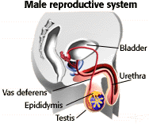
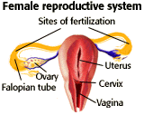

Introduction to the Birth Control Problem Set
Conception|  | During intercourse, sperm stored in the epididymis move through the vas deferens and the urethra before being ejaculated. If intercourse is unprotected, several hundred million sperm are released inside the partner's vagina. | |
|
After ejaculation, sperm are capable of fertilizing an egg for about 3 days. If ovulation occurs during these 3 days, one of those sperm may penetrate the egg and start a pregnancy. Fertilization normally occurs in the upper part of the Fallopian tubes. It takes about 6 days for the fertilized egg to move through the Fallopian tube and implant itself into the lining of the uterus where it will develop for 9 months. For further information, please review the Human Reproduction problem set. |
 | |
| To prevent conception, the process described above or intercepted. There are several ways to accomplish this. Refraining from sexual activity is the most reliable method of all. Unwanted pregnancies may also be prevented by several methods: by physically blocking sperm from following its course, destroying sperm, preventing the maturation of the egg, preventing the embryo from implanting itself into the uterus, or by surgically sterilizing one or both partners. The following section lists the different methods by the way they function. |


University of Arizona
Monday, February 16, 1998
Contact the Development Team
http://www.biology.arizona.edu
All contents copyright © 1998. All rights reserved.